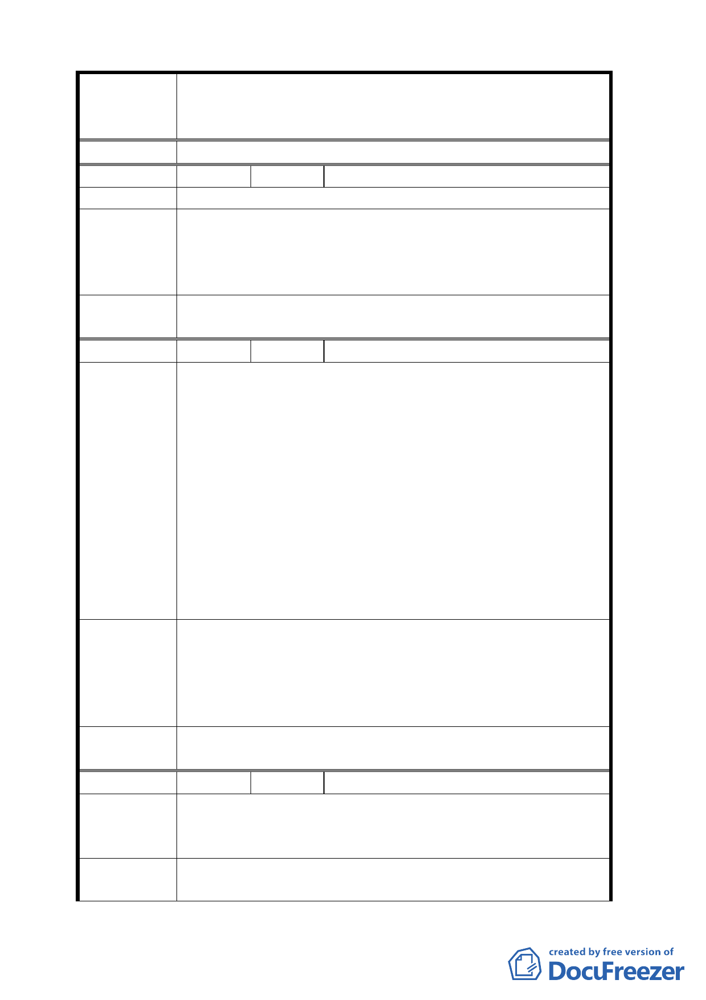

案名
決議
編號
陳情理由
建議辦法
委員會
決議
編號
陳情理由
建議辦法
委員會
決議
編號
陳情理由
建議辦法
變更臺北市華光社區暨週邊地區住宅區、電信用地、郵
政用地及變電所用地土地為商業區、數位科技專用區及
金融服務專用區主要計畫案
30 陳情人 陳文貞
土地利用發揮最大效益及保障現住戶權益。
華光社區極大部分為合法配住戶，更另有部分為逾
20 年和平繼承佔有，未經登記地上權之土地，並已依民
法 769、772 條規定，得請求登記為地上權之人，宜應於
出售本社區土地時，由現住戶全部有優先承買權。
同編號 2 決議。
31 陳情人 柯菊
1.延宕數十年（68、71 年市府兩度丈量之與司法機關合
作改建案起算）之百年日據時期老舊宿舍，擬更新為
華光社區計畫案（94 年 5 月巧洋公司曾召開公聽會）
言猶在耳，突轉變為 96 年 10 月 2 日公開展覽之所謂
數位科技金融與觀光飯店之商三特區，竟一日數變，
讓華光社區原更新案胎死腹中。
2.依都市更新條例，計畫應說明對現住戶之安置，今偌
大計畫，竟不見有關此部分之說明。
3.司法機關為收回宿舍，對所屬在職退休人員及其遺
眷，並未基於體恤、照顧之心，從寬從優認定資格，
反對居住眷舍長達三、四十年之同仁，動輒以訴訟相
對，令大多數同仁心生反感，批評法院之無情。
1.應從寬從優補償現住戶，包括合法與不合法之眷舍與
違建。
2.請規劃部分用地，依促進民間參與公共建設法第 15 條
讓售民間機構投資或由原住戶集資優先購買興建住
宅，以原地安置住戶，照顧現住戶。
同編號 2 決議。
32 陳情人 常尚信
申請人於 64 年 4 月奉派至台北地方法院法官，獲配
宿舍居住迄今，且於 71 年間在後院空地自費興建鋼筋水
泥 2 樓房舍。
申請人嗣雖調升高等法院庭長，但仍應認係合法現
住人，且為後院 2 樓房屋之原始建築人，具所有權，應
- 19 -